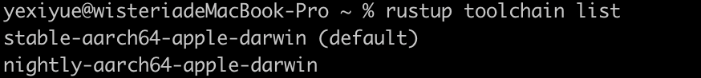
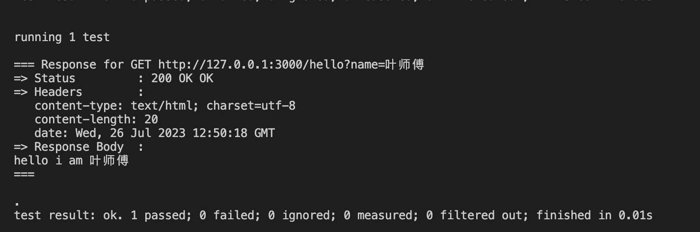
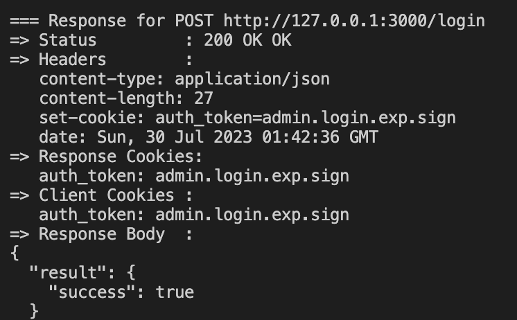
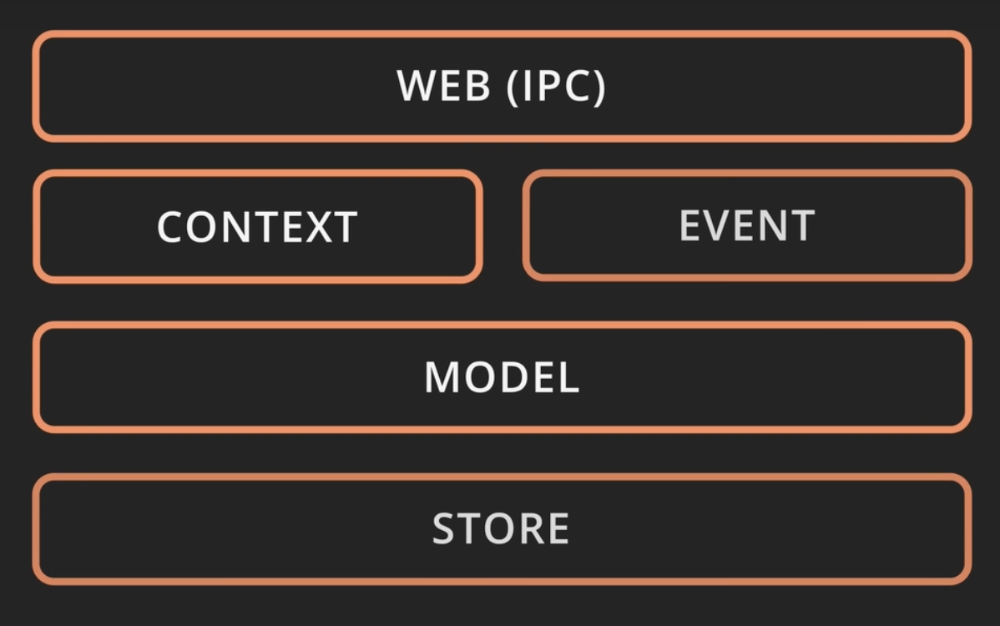
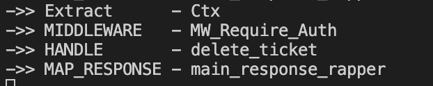

介绍
Rust Axum 学习
# Rust Axum 学习
# 1.generator
简单来说channel就是代表我们使用的Rust开发环境是稳定版的，还是试用版的，还是尝鲜版的？就像我们平常开发软件一样一样的，在软件里添加了新功能不能直接把线上的稳定版软件替换掉，因为新版本可能还有bug需要试用一段，试用一段确认没问题了再替换原来的稳定版。稳定版试用版尝鲜版分别对应stable,beta,nightly.在stable里没有的功能，可能在beta和nightly里就有了
generator的使用得用nightly版本
# 1.安装nightly版本
rustup toolchain install nightly
# 2.查看安装的版本
rustup toolchain list

# 3.在项目中使用
指点当前项目使用的版本
rustup override set nightly
或者直接设置nightly版本为默认
rustup default nightly
或者编译时指点版本
rustup run nightly cargo build
# 2.cargo watch
# 1.监听src执行
cargo watch -c -q -w src/ -x run
web api 借口
#![allow(unused)]
use std::net::SocketAddr;
use axum::{self, routing::get, response::Html, Router, Server};
#[tokio::main]
async fn main() {
let app: axum::Router<_, _>=Router::new().route("/hello", get(|| async {
Html("hello <strong>world</strong>")
}));
let addr=SocketAddr::new("127.0.0.1".parse().unwrap(),3000);
println!("==>Server on {}",addr);
Server::bind(&addr).serve(app.into_make_service()).await.unwrap();
}
# 2.监听测试
cargo watch -c -q -w tests/ -x "test -q <filename> -- --nocapture"
测试代码
#![allow(unused)]
use anyhow::{Result, Ok};
#[tokio::test]
async fn quick_test()->Result<()>{
let hc=httpc_test::new_client("http://127.0.0.1:3000")?;
hc.do_get("/hello").await?.print().await?;
Ok(())
}
# 3.获取query参数
需要导入模块serde
cargo add serde --features derive
cargo add serde_json
定义结构体
通过extract获取数据
#![allow(unused)]
use std::{net::SocketAddr, fmt::format};
use serde::Deserialize;
use axum::{
self,
response::{Html, IntoResponse},
routing::get,
Json, Router, Server, extract::Query,
};
//...
#[derive(Debug,Deserialize)]
struct HelloParams {
name: Option<String>,
}
//使用extract获取参数
async fn handler_hello(Query(params): Query<HelloParams>) -> impl IntoResponse {
println!("->> {:12} - handler_hello - {params:?}", "handler_hello");
let name=params.name.as_deref().unwrap_or("world");
Html(format!("hello i am {name}"))
}
测试代码
#![allow(unused)]
use anyhow::{Ok, Result};
#[tokio::test]
async fn quick_test() -> Result<()> {
let hc = httpc_test::new_client("http://127.0.0.1:3000")?;
hc.do_get("/hello?name=叶师傅").await?.print().await?;
Ok(())
}

# 4.获取path params
# 1.定义handler
async fn handler_hello2(Path(name): Path<String>) -> impl IntoResponse {
Html(format!("hello2 path params: {name:?}"))
}
# 2.定义路由
跟常见的一样，定义路由时需要指点路由段为params
let app: Router<_, _> = Router::new()
.route("/hello", get(handler_hello))
.route("/hello2/:name", get(handler_hello2));

# 5.拆分路由
# 1.将相关对单独放到一个路由
fn routes_hello()->Router{
Router::new()
.route("/hello", get(handler_hello))
.route("/hello2/:name", get(handler_hello2))
}
# 2.在根路由进行合并
#[tokio::main]
async fn main() {
//合并路由
let app: Router<_, _> = Router::new().merge(routes_hello());
let addr = SocketAddr::new("127.0.0.1".parse().unwrap(), 3000);
println!("==>Server on {}", addr);
Server::bind(&addr)
.serve(app.into_make_service())
.await
.unwrap();
}
# 6.静态文件服务
# 1.安装tower-http
cargo add tower-http --features full
# 2.拼接路由
#![allow(unused)]
use axum::{
extract::{Path, Query},
response::{Html, IntoResponse},
routing::{get, get_service},
Json, Router, Server,
};
use serde::Deserialize;
use std::{fmt::format, net::SocketAddr};
use tower_http::services::ServeDir;
#[tokio::main]
async fn main() {
let app: Router<_, _> = Router::new().merge(routes_hello()).fallback_service(routes_statics());
let addr = SocketAddr::new("127.0.0.1".parse().unwrap(), 3000);
println!("==>Server on {}", addr);
Server::bind(&addr)
.serve(app.into_make_service())
.await
.unwrap();
}
//...
//使用该方法构建静态文件路由
fn routes_statics() -> Router {
Router::new().nest_service("/", get_service(ServeDir::new("static")))
}
# 7.错误类型
- 定义错误枚举
- 通过范型result重新包装一下
- 为枚举实现IntoResponse trait
这样返回错误时能转换成response
error.rs
use axum::{response::IntoResponse, http::StatusCode};
pub type Result<T> = core::result::Result<T, Error>;
#[derive(Debug)]
pub enum Error {
LoginFail,
}
impl std::fmt::Display for Error {
fn fmt(&self, f: &mut std::fmt::Formatter<'_>) -> std::fmt::Result {
write!(f, "{self:?}")
}
}
impl IntoResponse for Error {
fn into_response(self) -> axum::response::Response {
println!("->> {:12} - {self:?}", "into_response");
(StatusCode::INTERNAL_SERVER_ERROR,"Unhandled-client-error").into_response()
}
}
返回错误
use crate::{error::{Error, Result}, web};
use axum::{routing::post, Json, Router};
use serde::Deserialize;
use serde_json::{json, Value};
pub fn routes() -> Router {
Router::new().route("/login", post(api_login))
}
//直接返回包装过后的result，返回的error由于实现了Into Response trait所以会转换成response
async fn api_login(payload: Json<LoginPayload>) -> Result<Json<Value>> {
println!("->> {:12} api_login", "HANDLER");
if payload.username != "admin" && payload.pwd != "123456" {
return Err(Error::LoginFail);
}
let body = Json(json!({
"result":{
"success":true
}
}));
Ok(body)
}
#[derive(Debug, Deserialize)]
struct LoginPayload {
username: String,
pwd: String,
}
# 8.中间件
定义响应拦截中间件
async fn main_response_rapper(res:Response)->Response{
println!("->> {:12} - main_response_rapper", "MAP_RESPONSE");
res
}
在路由中注册中间件
//...
#[tokio::main]
async fn main() {
let app: Router<_, _> = Router::new()
.merge(routes_hello())
.merge(routes())
//注册中间件
.layer(middleware::map_response(main_response_rapper))
.fallback_service(routes_statics());
let addr = SocketAddr::new("127.0.0.1".parse().unwrap(), 3000);
println!("==>Server on {}", addr);
Server::bind(&addr)
.serve(app.into_make_service())
.await
.unwrap();
}
# 9.使用cookie
# 1.安装tower-cookies
tower-cookies (opens new window)
cargo add tower-cookies
例子直接参考上面文档，使用非常简单，通过layer注册，然后再通过extract使用cookie
//...
use tower_cookies::CookieManagerLayer;
#[tokio::main]
async fn main() {
let app: Router<_, _> = Router::new()
.merge(routes_hello())
.merge(routes())
.layer(middleware::map_response(main_response_rapper))
//注册cookie中间件
.layer(CookieManagerLayer::new())
.fallback_service(routes_statics());
let addr = SocketAddr::new("127.0.0.1".parse().unwrap(), 3000);
println!("==>Server on {}", addr);
Server::bind(&addr)
.serve(app.into_make_service())
.await
.unwrap();
}
使用Cookie extract
//...
use tower_cookies::{Cookies,Cookie};
async fn api_login(cookie:Cookies,payload: Json<LoginPayload>) -> Result<Json<Value>> {
println!("->> {:12} api_login", "HANDLER");
if payload.username != "admin" && payload.pwd != "123456" {
return Err(Error::LoginFail);
}
//添加cookie
cookie.add(Cookie::new(web::AUTH_TOKEN , "admin.login.exp.sign"));
let body = Json(json!({
"result":{
"success":true
}
}));
Ok(body)
}

可以看到set-cookie 响应头，代表cookie设置成功
# 10 state
State in axum::extract - Rust --- axum中的状态 (opens new window)
- 通过router.with_state传入状态
- 通过extract state使用状态
# 1.model
这里model，编写crud相关方法，然后利用服务器state进行存储状态

use crate::error::{Error, Result};
use serde::{Deserialize, Serialize};
use std::sync::{Arc, Mutex};
#[derive(Debug, Clone, Serialize)]
pub struct Ticket {
pub id: u64,
pub title: String,
}
#[derive(Debug, Clone, Deserialize)]
pub struct TicketForCreate {
pub title: String,
}
#[derive(Clone)]
pub struct ModelController {
tickets_store: Arc<Mutex<Vec<Option<Ticket>>>>,
}
impl ModelController {
pub async fn new() -> Result<Self> {
Ok(Self {
tickets_store: Arc::default(),
})
}
}
impl ModelController {
pub async fn create_ticket(&self, ticket_fc: TicketForCreate) -> Result<Ticket> {
let mut store = self.tickets_store.lock().unwrap();
let id = store.len() as u64;
let ticket = Ticket {
id,
title: ticket_fc.title,
};
store.push(Some(ticket.clone()));
Ok(ticket)
}
pub async fn list_tickets(&self) -> Result<Vec<Ticket>> {
let store = self.tickets_store.lock().unwrap();
Ok(store
.iter()
.filter_map(|x| x.clone())
.collect::<Vec<Ticket>>())
}
pub async fn delete_ticket(&self, id: u64) -> Result<Ticket> {
let mut store = self.tickets_store.lock().unwrap();
let ticket = store.get_mut(id as usize).and_then(|x| x.take());
ticket.ok_or(Error::TicketDeleteIdNotFound { id })
}
}
# 2.routes_tickets
定义路由和handle
use axum::extract::{FromRef, Path, State};
use axum::routing::{delete, get, post};
use axum::{Json, Router};
use crate::model::{ModelController, Ticket, TicketForCreate};
use crate::Result;
/* #[derive(Clone,FromRef )]
struct AppState{
mc:ModelController
} */
//使用服务器state
pub fn routes(State(mc): State<ModelController>) -> Router {
Router::new()
.route("/tickets", post(create_ticket).get(list_tickets))
.route("/tickets/:id", delete(delete_ticket))
.with_state(mc)
}
async fn create_ticket(
State(mc): State<ModelController>,
Json(ticket_fc): Json<TicketForCreate>,
) -> Result<Json<Ticket>> {
println!("->> {:12} - create_ticket", "HANDLE");
let ticket = mc.create_ticket(ticket_fc).await?;
Ok(Json(ticket))
}
async fn list_tickets(State(mc): State<ModelController>) -> Result<Json<Vec<Ticket>>> {
println!("->> {:12} - list_tickets", "HANDLE");
let list = mc.list_tickets().await?;
Ok(Json(list))
}
async fn delete_ticket(
State(mc): State<ModelController>,
Path(id): Path<u64>,
) -> Result<Json<Ticket>> {
println!("->> {:12} - delete_ticket", "HANDLE");
let ticket = mc.delete_ticket(id).await?;
Ok(Json(ticket))
}
# 3.注册state
#![allow(unused)]
use axum::{
extract::{Path, Query, State},
middleware,
response::{Html, IntoResponse, Response},
routing::{get, get_service},
Json, Router, Server,
};
use serde::Deserialize;
use std::{fmt::format, net::SocketAddr};
use tower_cookies::CookieManagerLayer;
use tower_http::{services::ServeDir, trace::TraceLayer};
pub mod error;
use error::{Error, Result};
mod web;
use web::routes_login::routes;
use crate::{model::ModelController, web::routes_tickets};
mod model;
#[tokio::main]
async fn main() -> Result<()> {
//1.定义状态
let model_controller = ModelController::new().await?;
let app: Router = Router::new()
.merge(routes_hello())
.merge(routes())
//2.传入状态
.nest("/api", web::routes_tickets::routes(State(model_controller)))
.layer(middleware::map_response(main_response_rapper))
.layer(CookieManagerLayer::new())
.layer(TraceLayer::new_for_http())
.fallback_service(routes_statics());
let addr = SocketAddr::new("127.0.0.1".parse().unwrap(), 3000);
println!("==>Server on {}", addr);
Server::bind(&addr)
.serve(app.into_make_service())
.await
.unwrap();
Ok(())
}
# 11.路由中间件
中间件使用跟koa差不多
lazy-regex (opens new window)正则表达式包
# 1.定义中间件函数
use axum::http::Request;
use axum::middleware::Next;
use axum::response::Response;
use tower_cookies::Cookies;
use crate::error::{Error, Result};
use crate::web::AUTH_TOKEN;
use lazy_regex::regex_captures;
pub async fn mw_require_auth<B>(
cookies: Cookies,
req: Request<B>,
next: Next<B>,
) -> Result<Response> {
//{:<12}是字符串格式话代码
println!("->> {:<12} - MW_Require_Auth ", "MIDDLEWARE");
let auth_token = cookies.get(AUTH_TOKEN).map(|c| c.value().to_string());
let (user_id, exp, sign) = auth_token
.ok_or(Error::AuthFailNoAuthTokenCookie)
.and_then(parse_token)?;
Ok(next.run(req).await)
}
pub fn parse_token(token: String) -> Result<(u64, String, String)> {
let (_whole, user_id, exp, sign) = regex_captures!(r#"^user-(\d+)\.(.+)\.(.+)"#, &token)
.ok_or(Error::AuthFailTokenWrongFormat)?;
let user_id: u64 = user_id
.parse()
.map_err(|_| Error::AuthFailTokenWrongFormat)?;
Ok((user_id, exp.to_string(), sign.to_string()))
}
# 2.注册
let routes_apis = web::routes_tickets::routes(model_controller)
//路由中间件
.route_layer(middleware::from_fn(web::mw_auth::mw_require_auth));
# 12.自定义extract
安装依赖
cargo add async-trait
# 1.定义结构体
这里主要就是定义一些存储数据的结构和方法
ctx.rs
#[derive(Debug, Clone)]
pub struct Ctx {
user_id: u64,
}
impl Ctx {
pub fn new(user_id: u64) -> Self {
Self { user_id }
}
}
impl Ctx{
pub fn user_id(&self) -> u64 {
self.user_id
}
}
# 2.为struct 实现相应 trait
这里实现了FromRequestParts trait
#[async_trait]
impl<S> FromRequestParts<S> for Ctx
where
S: Send + Sync,
{
type Rejection = Error;
async fn from_request_parts(parts: &mut Parts, _state: &S) -> Result<Self> {
println!("->> {:<12} - Ctx ", "Extract");
let cookies = parts.extract::<Cookies>().await.unwrap();
let auth_token = cookies.get(AUTH_TOKEN).map(|c| c.value().to_string());
let (user_id, exp, sign) = auth_token
.ok_or(Error::AuthFailNoAuthTokenCookie)
.and_then(parse_token)?;
Ok(Ctx::new(user_id))
}
}
# 3.使用
这里是在路由中间件中进行使用
pub async fn mw_require_auth<B>(
ctx: Result<Ctx>,
req: Request<B>,
next: Next<B>,
) -> Result<Response> {
//{:<12}是字符串格式话代码
println!("->> {:<12} - MW_Require_Auth ", "MIDDLEWARE");
ctx?;
Ok(next.run(req).await)
}

# 13.请求扩展
定义全局中间件
并使用请求扩展保存一些数据
pub async fn mw_ctx_resolve<B>(
_mc: State<ModelController>,
cookies: Cookies,
mut req: Request<B>,
next: Next<B>,
) -> Result<Response> {
println!("->> {:<12} - mw_ctx_resolve","MIDDLEWARE");
let auth_token = cookies.get(AUTH_TOKEN).map(|c| c.value().to_string());
let result_ctx: Result<Ctx> = match auth_token
.ok_or(Error::AuthFailNoAuthTokenCookie)
.and_then(parse_token)
{
Ok((user_id, ..)) => Ok(Ctx::new(user_id)),
Err(e) => Err(e),
};
if result_ctx.is_err() && !matches!(result_ctx, Err(Error::AuthFailNoAuthTokenCookie)) {
cookies.remove(Cookie::named(AUTH_TOKEN));
}
//使用请求扩展
req.extensions_mut().insert(result_ctx);
Ok(next.run(req).await)
}
注册中间件
let app: Router = Router::new()
.merge(routes_hello())
.merge(routes())
.nest("/api", routes_apis)
.layer(TraceLayer::new_for_http())
//全局中间件
.layer(middleware::map_response(main_response_rapper))
.layer(middleware::from_fn_with_state(
model_controller.clone(),
web::mw_auth::mw_ctx_resolve,
))
.layer(CookieManagerLayer::new())
.fallback_service(routes_statics());
注意中间件的顺序，state extract的顺序也需要注意一下，不然类型会报错
实现extract
#[async_trait]
impl<S> FromRequestParts<S> for Ctx
where
S: Send + Sync,
{
type Rejection = Error;
async fn from_request_parts(parts: &mut Parts, _state: &S) -> Result<Self> {
println!("->> {:<12} - Ctx ", "Extract");
//获取请求扩展里的数据
parts
.extensions
.get::<Result<Ctx>>()
.ok_or(Error::AuthFailCtxNoInRequestExt)?
.clone()
}
}
然后其他中间件和handle正常使用extract即可
//中间件
pub async fn mw_require_auth<B>(ctx: Ctx, req: Request<B>, next: Next<B>) -> Result<Response> {
//{:<12}是字符串格式话代码
println!("->> {:<12} - MW_Require_Auth - {ctx:?}", "MIDDLEWARE");
Ok(next.run(req).await)
}
//handler
async fn create_ticket(
State(mc): State<ModelController>,
ctx: Ctx,
Json(ticket_fc): Json<TicketForCreate>,
) -> Result<Json<Ticket>> {
println!("->> {:12} - create_ticket", "HANDLE");
let ticket = mc.create_ticket(ctx,ticket_fc).await?;
Ok(Json(ticket))
}

# 注意：
注意自定义extract和Json extract的顺序